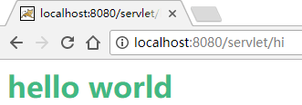
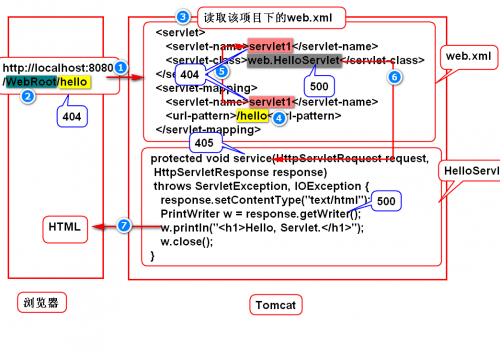
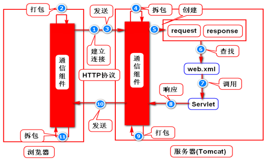
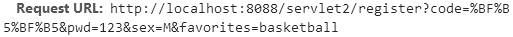
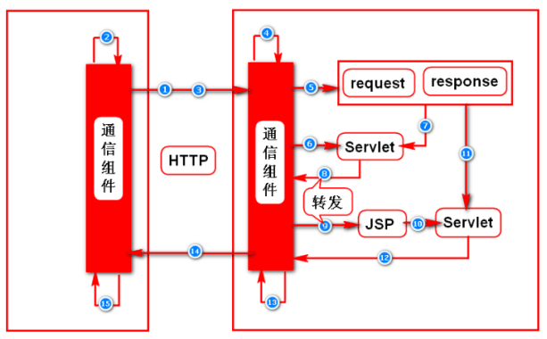
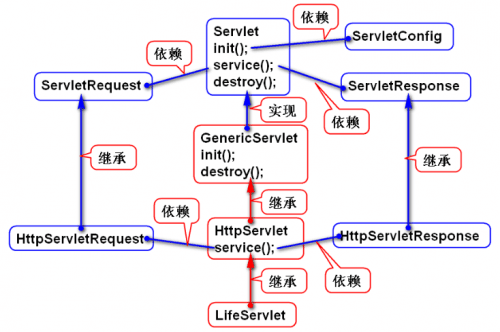
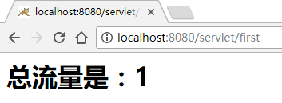
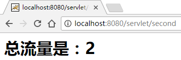

什么是Servlet
sun(oracle)公司制订的一种用来扩展web服务器功能的组件规范。使用Myeclipse创建一个web project，编写一个简单的servlet：src→com.postar.servlet（package）→HiServlet：
1 | public class HiServlet extends HttpServlet{ |
配置文件WebRoot→WEB-INF→web.xml下添加：
1 |
|
启动Tomcat，在浏览器中输入：http://localhost:8088/servlet/hi 得到页面：

程序执行的过程：

Servlet运行的原理
原理图（执行过程）：

具体过程描述：
1.浏览器依据ip,port建立与容器之间的连接。
2.浏览器将请求数据打包(包含了请求资源路径)。
3.向容器（符合一定规范，提供组件的运行环境的一个程序。）发请求数据包。
4.容器解析请求数据包。
5.将解析的结果封装到request对象上，同时，容器还要创建一个response对象。
6.容器依据请求资源路径找到servlet的配置(web.xml)。
7.8.然后创建该servlet对象，调用servlet对象的service方法(会将request对象,response对象作为参数)。在service方法里面，可以通过request对象获得请求数据并进行相应的处理，然后，处理结果只需要写到response对象上。
9.容器从response对象上获取处理结果，然后打包。
10.发送给浏览器。
11.浏览器从响应数据包中取出处理结果，生成相应的页面。
get请求和post请求
最常用的两种方式get和post。get/post请求的区别：
get请求
如果需要向服务器传递少量数据用get。
get请求使用URL传值，即数据会附着在URL上传递给服务器，如：

只能传递较少的数据
post请求
如果需要提交表单，或者传递大量的数据用post。
post请求使用请求数据包的实体内容来传值。
可以传递大量数据。
post请求隐私性更好，但是安全级别和get完全相等，不能说它更安全。通过F12都能查看到所有数据。
解决get，psot请求中文乱码
服务端Servlet代码：
1 | public class RegistServlet extends HttpServlet{ |
客户端html代码：
1 |
|
配置xml：
1 | <servlet> |
重定向
服务器向浏览器发送一个302状态码及一个Location消息头（该消息头的值是一个地址，称之为重定向地址），浏览器收到后会立即向重定向地址发请求。
如何重定向？
1 | response.sendRedirect(String url); |
特点：
重定向地址可以是任意的地址。
重定向之后，浏览器地址栏的地址会变。
转发
一个web组件（servlet/jsp）将未完成的处理通过容器转交给另外一个web组件继续完成。常见的情况是：一个servlet获得数据之后（比如，通过调用dao），将这些数据转发给一个jsp，由这个jsp来展现这些数据（比如，以表格的方式来展现）。转发的原理图：
转发的过程：

1.先绑订数据到request对象：
1 | // 变量名name，值obj |
2.获得转发器：
1 | // uri：转发的目的地，比如一个jsp文件。 |
3.转发：
1 | rd.forward(request,response); |
转发的特点：
转发之后，浏览器地址栏的地址不变。
转发的目的地必须是同一个应用内部的某个地址。
转发所涉及的各个web组件会共享同一个request对象和response对象。
转发和重定向的区别
转发所涉及的各个web组件会共享同一个request对象和response对象，而重定向不行。说明：当请求到达容器，容器会创建request对象和response对象，当响应发送完毕，容器会立即删除request对象和response对象。即request对象和response对象的生存时间是一次请求与响应期间。
转发之后，浏览器地址栏的地址不变，重定向会变。
转发的地址必须是同一个应用内部某个地址，而重定向没有这个限制。
转发是一件事情未做完，调用另外一个组件继续做；而重定向是一件事情已经做完，再调用一个组件做另外一件事情。
Servlet的生命周期
Servlet容器如何创建Servlet对象、如何为Servlet对象分配、准备资源、如何调用对应的方法来处理请求以及如何销毁Servlet对象的整个过程即Servlet的生命周期。
阶段一：实例化，容器调用servlet的构造器，创建一个servlet对象。容器在默认情况下，对于某个类型的servlet,只会创建一个实例。
阶段二：初始化，容器在创建好servlet对象之后，会立即调用该对象的init方法。一般情况下，我们不用写init方法，因为GenericServlet已经提供了init方法的实现（将容器传递过来的ServletConfig对象保存来下，并且，提供了getServletConfig方法来获得ServletConfig对象）。
阶段三：就绪，容器收到请求之后，调用servlet对象的service方法来处理请求。
阶段四：销毁，容器依据自身的算法删除servlet对象，被删除的servlet对象会被垃圾回收机制回收。容器在删除servlet对象之前会调用该对象的destroy方法（只会执行一次）。可以override destroy方法来实现自已的处理逻辑。
例子：
1 | public class LifeServlet extends HttpServlet{ |
生命周期相关的几个接口与类：

ServletContext
Servlet上下文，WEB容器在启动时，它会为每个WEB应用程序都创建一个对应的ServletContext对象，它代表当前web应用，是一个全局的环境变量。该应用中的任何组件，在任何时候都可以访问到该对象，所以Servlet上下文具有唯一性。
在一个web项目中写两个相同的Servlet：
1 | public class FirstServlet extends HttpServlet{ |
SecondServlet内容和FirstServlet一致。配置略。访问http://localhost:8080/servlet/first：

访问http://localhost:8080/servlet/second：

可见它们获取到的是同一个ServletContext，换句话说ServletContext只有一份。
JSP
JSP（Java Server Page）是Sun公司制定的一种服务器端动态页面技术的组件规范，以“.jsp”为后缀的文件中既包含HTML静态标记用于表现页面，也包含特殊的代码，用于生成动态内容。
JSP作为简化Servlet开发的一种技术，实质上最终依然要转变为Servlet才可能运行，只不过这个转变过程由Servlet容器来完成。
统一处理异常
将系统异常将给容器来处理，在web.xml中配置异常处理页面：
1 | <error-page> |
过滤器Filter
编写过滤器遵循下列步骤：
1.编写一个实现了Filter接口的类。
2.实现Filter接口的三个方法，过滤逻辑在doFilter方法中实现。
3.在Web程序中注册过滤器。
4.把过滤器和Web应用一起打包部署。
当有多个过滤器的时候，过滤的先后按照xml文件中mapping的先后顺序执行，具体过程如下图所示：

上图展示了多个过滤器的执行流程，过滤器1的doFilter的code1 →过滤器2的doFilter的code1 →service()方法→过滤器2的doFilter的code2 →过滤器1的doFilter的code2 →返回给客户端。在这个动作的传递过程中一定要写chain.doFilter()。
模拟一个登录的例子：
1 | public class LoginFilter implements Filter{ |
在web.xml中配置Filter：
1 | <filter> |